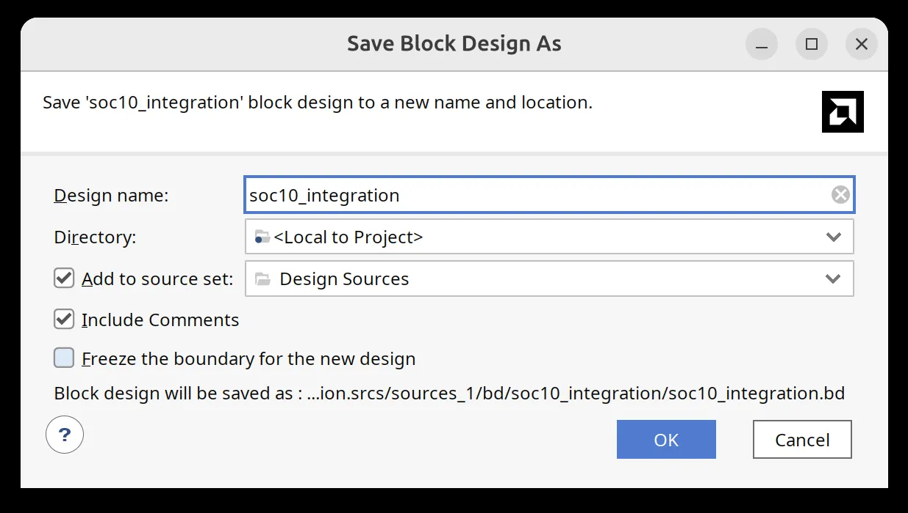
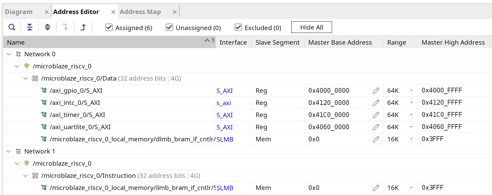
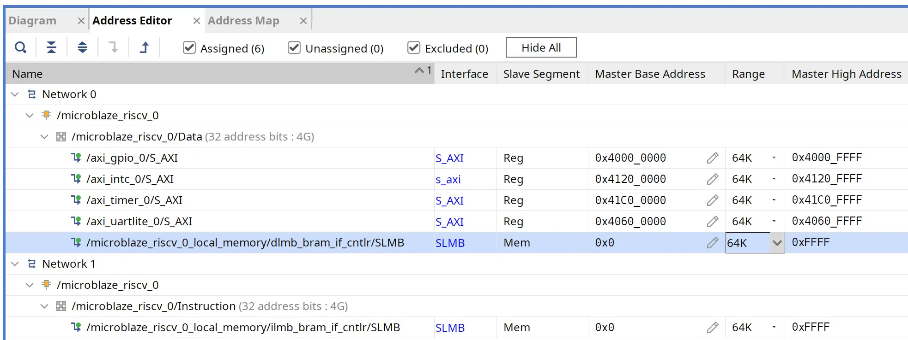
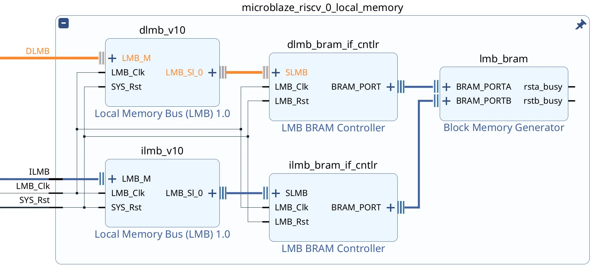
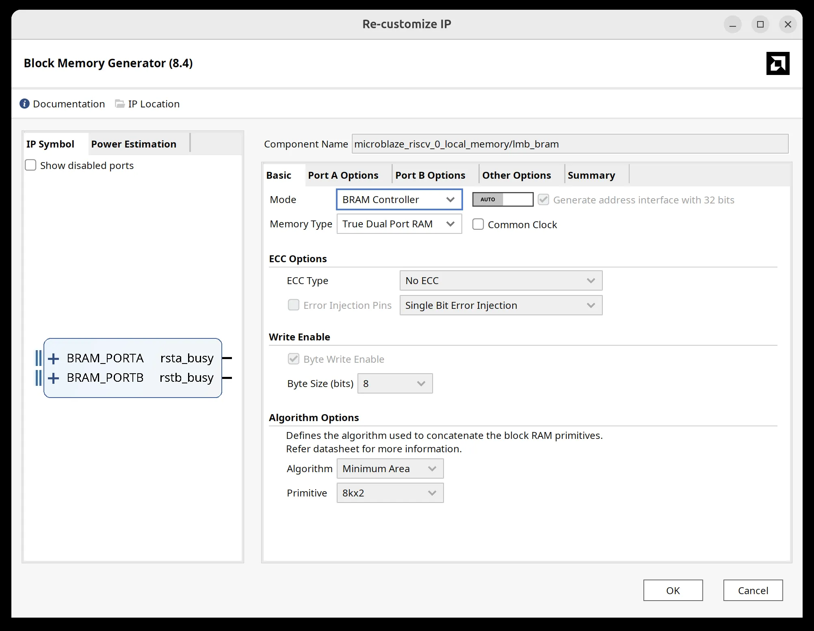
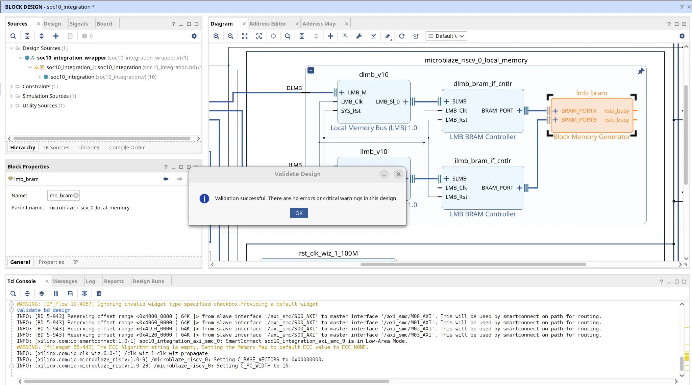
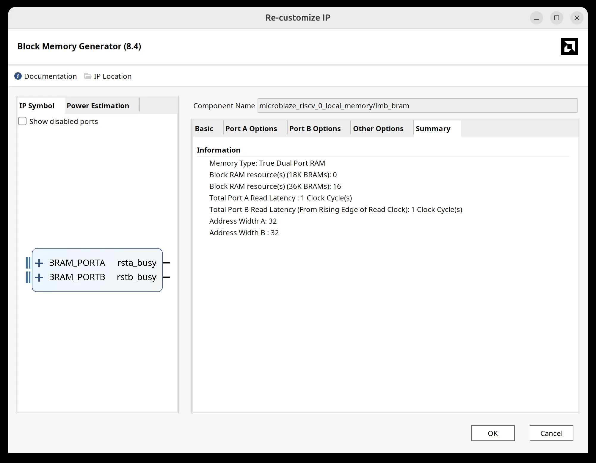
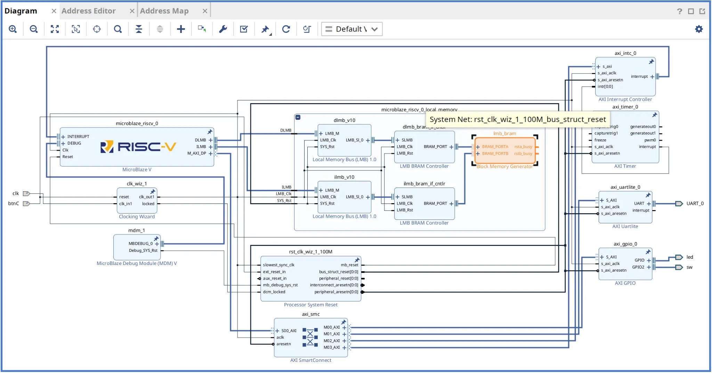

GPIO · UART · Timer 통합 실습 목표
Basys3의 스위치 14개는 LED0~LED13에 표시하고, UART 명령으로 LED14를 제어하며, Timer 인터럽트로 LED15를 깜빡이게 합니다. 앞 장에서 구현한 세 주변장치 기능을 하나의 MicroBlaze V C 프로그램에서 동시에 실행합니다.
| 입력·동작 | 예상 출력 |
|---|---|
| SW0 ON | LED0 ON |
| SW3 ON | LED3 ON |
UART 문자 1 / 0 | LED14 ON / OFF |
| Timer 인터럽트 약 0.5초 간격 | LED15 ON / OFF 반복 |
UART 문자 r / h | 상태 / 도움말을 터미널에 출력 |
10장은 09장의 정상 하드웨어를 별도 프로젝트로 복제하고 Local BRAM을 16 KiB에서 64 KiB로 확장합니다. GPIO·UART Lite·Timer·INTC 연결은 유지한 채 10장 Bitstream·XSA·Platform을 새로 생성합니다. Vitis에서는 이미 작성한 soc10_integration 프로그램을 새 Platform에 연결하여 통합 동작을 확인합니다. 기존 09장 프로젝트는 보존합니다.
09장 성공 프로젝트 복제 · BRAM 64 KiB 확장
09장 AXI INTC 실기 성공 프로젝트를 ~/soc/hw/soc10_integration으로 복제합니다. CPU·AXI 주변장치·Clock·Reset·인터럽트 연결은 유지하고 Local BRAM 용량만 64 KiB로 확장합니다.
| 항목 | 09장 성공 구성 | 10장 확장 목표 |
|---|---|---|
| Local BRAM | 16 KiB | 64 KiB · 기존의 4배 |
| ILMB / DLMB 주소 | 0x00000000~0x00003FFF | 0x00000000~0x0000FFFF |
| AXI GPIO · UART Lite · Timer · INTC | 기존 주소·배선 | 모두 유지 |
| Vivado XPR | soc09_axi_interrupt.xpr | soc10_integration.xpr |
| Vitis Platform | soc09_axi_interrupt_platform | soc10_integration_platform 신규 |
Basys3 Artix-7에는 총 1,800 Kbits의 Block RAM이 있습니다. 64 KiB의 데이터 용량은 512 Kibits로 전체 물리 BRAM의 약 28%에 해당합니다. 128 KiB는 약 57%이므로 이후 사용자 RTL·FIFO·NPU 버퍼 자원을 고려하여 64 KiB를 교육용 확장 기준으로 선택합니다. 실제 BRAM 점유 개수와 Timing은 Vivado 구현 결과로 확인합니다.
Timer는 인터럽트, UART는 Polling(폴링, 상태 반복 확인) 방식 그대로입니다. 64 KiB는 10장 코드의 성공 결과가 아니라 새 하드웨어의 설계 목표입니다.
LED0~LED15 출력 역할 분리
같은 LED에 여러 기능이 따로 기록하지 않도록 LED 16개 영역을 나누어 배정합니다.
| 항목 | 내용 |
|---|---|
| SW[13:0] → LED[13:0] | 스위치 하위 14비트를 그대로 표시 |
| UART 문자 1/0 → LED14 | 터미널 명령으로 켜고 끔 |
| Timer Interrupt → LED15 | interrupt_count 홀짝에 따라 약 0.5초마다 반전 |
UART·Timer 실행 방식 구분
UART의 수신 FIFO는 Main Loop에서 비차단 확인하며 Timer는 인터럽트 Callback으로 처리합니다.
XUartLite_IsReceiveEmpty()로 수신 여부를 확인한 뒤 문자가 있을 때만 읽습니다. Timer Callback에서는 interrupt_count++만 실행합니다.
LED 출력 충돌 방지
GPIO Channel 1에 쓰는 최종 값은 Main Loop가 단 한 곳에서 합성합니다.
new_led_state =
(switch_value & SW_LED_MASK) |
uart_led_state |
heartbeat_state;SW14·SW15는 이 예제에서 LED14·LED15의 직접 복사 대상에서 제외됩니다.
09장 성공 프로젝트 열기
09장에서 정상 검증한 Vivado 프로젝트를 10장 하드웨어의 출발점으로 사용합니다.
- Vivado 2024.2 실행Vivado에서 File → Project → Open을 선택합니다.
- 09장 프로젝트 열기
~/soc/hw/soc09_axi_interrupt/soc09_axi_interrupt.xpr을 엽니다. - Block Design 확인
soc09_axi_interrupt의 CPU, GPIO, UART Lite, Timer, INTC와 Local BRAM 구성이 기존 09장과 같은지 확인합니다. 이 프로젝트는 저장하거나 수정하지 않습니다.
Save As · 새 Block Design · Wrapper 분리
09장 성공 프로젝트와 분리해 10장 XPR·Block Design·Wrapper를 만듭니다.
- 10장 Vivado 프로젝트로 복제File → Project → Save As를 선택하고 프로젝트 이름
soc10_integration을 지정합니다. Project Summary의 최종 위치는~/soc/hw/soc10_integration입니다. - Save Block Design As복제 프로젝트에서
soc09_axi_interruptBD를 연 뒤 File → Save Block Design As를 실행합니다. Design name에soc10_integration, Directory는<Local to Project>, Add to source set은Design Sources로 설정하고 OK를 누릅니다. - 10장 Wrapper 생성 및 Top 지정새
soc10_integration.bd에 대해 HDL Wrapper를 생성하고soc10_integration_wrapper를 Set as Top으로 지정합니다. Top이 여전히soc09_axi_interrupt_wrapper인지 반드시 확인합니다. - 09장 참조 여부 확인Sources의 계층 구조에서 새 Wrapper가 새
soc10_integration.bd를 참조하는지 확인합니다. 복제 직후Vivado 12-3647하위 설계/파일셋 경고가 실제로 표시됐으므로 합성 실패 시 해당 참조를 먼저 점검합니다. 경고가 떴다는 이유만으로 성공 또는 실패를 단정하지 않습니다.

| 실제 확인 화면 | 확인 결과 |
|---|---|
| Project Summary · soc10_integration | ~/soc/hw/soc10_integration, xc7a35tcpg236-1 |
| Save Block Design As | Design name soc10_integration, <Local to Project>, Design Sources 등록 |
| Hierarchy | Top soc10_integration_wrapper 및 새 soc10_integration.bd 확인 |
Address Editor · 기존 주소 확인
실제 주소를 먼저 확인한 다음 새 프로젝트에서 Local BRAM만 확장합니다.
- Address Editor 열기
soc10_integrationDiagram 위의 Address Editor 탭을 누릅니다. - Data와 Instruction 확인Network 0의
dlmb_bram_if_cntlr/SLMB와 Network 1의ilmb_bram_if_cntlr/SLMB를 펼칩니다. 두 행의 초기 Base는0x0000_0000, Range는16K, High는0x0000_3FFF입니다. - AXI와 구분GPIO
0x4000_0000, UART Lite0x4060_0000, INTC0x4120_0000, Timer0x41C0_0000의64K는 각 주변장치의 주소 할당 범위이므로 변경하지 않습니다.

0x0000_4000과 GPIO의 0x4000_0000은 서로 다른 값입니다. 주소는 16진수 네 자리씩 구분해서 읽습니다. 초기 Address Editor 화면은 Assigned (6), Unassigned (0)으로 확인됐습니다.ILMB · DLMB를 16K → 64K로 변경
Instruction(명령)과 Data(데이터)는 하나의 공유 Local BRAM에 접근합니다. 두 주소 경로 모두 같은 범위로 변경합니다.
- ILMB Range 변경Network 1 →
microblaze_riscv_0/Instruction→ilmb_bram_if_cntlr/SLMB행에서 Range 16K → 64K를 선택한 후 Enter를 누릅니다. High Address가0x0000_FFFF로 변경되는지 확인합니다. - DLMB Range 변경Network 0 →
microblaze_riscv_0/Data→dlmb_bram_if_cntlr/SLMB행에서 Range 16K → 64K를 선택하고 Enter로 확정합니다. - 양쪽 범위 대조두 행 모두 Base
0x0000_0000, Range 64K, High0x0000_FFFF로 표시되는지 확인합니다. AXI GPIO·UART Lite·Timer·INTC 주소는 이전 그대로입니다. - 저장Ctrl+S로 Block Design을 저장합니다.

| 변경 완료 주소 | Base | Range | High |
|---|---|---|---|
| ILMB · Instruction | 0x0000_0000 | 64K | 0x0000_FFFF |
| DLMB · Data | 0x0000_0000 | 64K | 0x0000_FFFF |
Local BRAM 내부 · AXI · Clock · Reset 확인
새 10장 Block Design의 실제 화면에서 기존 하드웨어 구성이 유지됨을 확인했습니다.
- Local Memory 내부 펼치기Diagram으로 돌아와
microblaze_riscv_0_local_memory왼쪽의+를 눌러 내부를 펼칩니다. - 공유 RAM 연결 확인
dlmb_bram_if_cntlr/BRAM_PORT→lmb_bram/BRAM_PORTA,ilmb_bram_if_cntlr/BRAM_PORT→lmb_bram/BRAM_PORTB를 확인합니다. 물리적으로 하나의 True Dual Port RAM입니다. - Block Memory Generator 확인
lmb_bram을 더블클릭해 Basic 탭의 ModeBRAM Controller, Memory TypeTrue Dual Port RAM, ECCNo ECC, 자동 주소 설정을 확인합니다. 값을 수동으로 변경할 필요는 없습니다. - AXI · Interrupt · 외부 포트 확인CPU
M_AXI_DP→axi_smc→ GPIO·UART Lite·Timer·INTC 연결,axi_timer_0/interrupt→axi_intc_0/intr[0:0]→axi_intc_0/interrupt→ CPUINTERRUPT, 외부led·sw·UART_0가 유지되는지 확인합니다.


10장 통합 구성도 열기 — 이 SVG는 신호 관계를 설명하는 구조도이며, Vivado GUI 원본 캡처는 아닙니다.
Validate Design · BRAM IP Summary
이 SECTION은 설계 연결과 64K 메모리 설정의 일관성만 확인합니다. 구현 자원·최종 타이밍 보고서는 SECTION 12에서 확인합니다.
- Validate DesignDiagram 툴바의 Validate Design 버튼을 누르거나 Tools → Validate Design을 실행합니다.
- 검증 결과 확인실제 화면에 Validation successful! There are no errors or critical warnings in this design.가 표시됐습니다. OK를 누릅니다.
- BRAM Summary 확인
lmb_bram을 더블클릭 → Summary 탭을 선택합니다. 실제 표시된 값은 36K BRAM 16개, 18K BRAM 0개, Port A/B Read Latency 각 1 Clock, Address Width A/B 각 32입니다. - 설정 창 닫고 저장설정을 변경하지 않았으므로 Cancel을 누른 후 Ctrl+S로 저장합니다.



| 확인 대상 | 실제 결과 | 판정 범위 |
|---|---|---|
| Address Editor ILMB / DLMB | 64K / 64K | 주소 설정 확인 |
| Validate Design | 성공 · Error 0, Critical Warning 0 | BD 연결 검증 |
| Block Memory Generator Summary | RAMB36 자원 16개, RAMB18 0개 | IP의 생성 예정 자원 추정 |
Generate Bitstream → Utilization · Timing
합성과 구현이 끝난 뒤에만 구현 자원과 최종 Timing을 판정합니다. 불필요한 Generate Output Products 수동 실행은 포함하지 않습니다.
- 프로젝트 저장 · Top 확인Ctrl+S로 저장하고 Sources의 Top이
soc10_integration_wrapper인지 확인합니다. - Generate Bitstream왼쪽 Flow Navigator → PROGRAM AND DEBUG → Generate Bitstream을 클릭합니다. Synthesis 또는 Implementation 미완료 안내가 나오면 필요한 실행을 승인합니다. Project Mode에서는 필요한 Output Products를 빌드 과정에서 자동으로 생성합니다.
- 실행 결과 확인Synthesis → Implementation → Bitstream 생성이 모두 성공했는지 확인합니다. 실패하면 첫 번째 오류 메시지를 확인한 뒤 진행을 중단합니다.
- Open Implemented DesignBitstream 생성 완료 후 Open Implemented Design을 엽니다.
- Report UtilizationReports → Report Utilization에서 Block RAM Tile과
RAMB36E1사용량, LUT, FF를 확인합니다. IP Summary의 BRAM36 16개와 실제 구현 자원 수는 구별합니다. - Report Timing SummaryReports → Report Timing Summary에서 Setup
WNS/TNS, HoldWHS/THS, Pulse Width, Clock Summary와 Check Timing / Unconstrained Paths를 확인합니다. WNS 하나만으로 전체 타이밍이 통과됐다고 판정하지 않습니다.
Vivado 2024.2 · 구현 결과
| 검증 항목 | 실제 관측값 | 판정 |
|---|---|---|
| Setup | WNS +1.347 ns / TNS 0.000 ns / 실패 Endpoint 0 | 사용자 지정 Setup 타이밍 충족 |
| Hold | WHS +0.016 ns / THS 0.000 ns / 실패 Endpoint 0 | Hold 충족 |
| Pulse Width | WPWS +3.000 ns / TPWS 0.000 ns / 실패 Endpoint 0 | Pulse Width 충족 |
| Block RAM Tile | 16 / 50 (32.0%) | 구현 보고서 값. IP Summary의 36K BRAM 16개와 일치 |
| Slice LUT / Slice Register | 2,762 / 20,800 · 2,653 / 41,600 | 구현 자원 사용량 |
| Slice / Bonded IOB | 991 / 8,150 · 36 / 106 | 구현 자원 사용량 |
| On-Chip Power | 0.205 W (Dynamic 0.132 W / Static 0.073 W) | 도구 추정값 · 신뢰도 Low |
| Junction Temperature | 26.0°C (Ambient 25.0°C 가정) | 분석 가정 기반 추정값, 실측 아님 |
10장 XSA 내보내기
Bitstream을 생성한 10장 하드웨어의 BRAM 주소·주변장치 정보를 Vitis에 전달합니다.
- Export HardwareVivado에서 File → Export → Export Hardware를 실행합니다.
- Bitstream 포함Export Hardware 마법사에서 Include Bitstream을 선택합니다.
- Files 화면에서 이름·경로 지정XSA file name은
soc10_integration, Export to는~/soc/hw/soc10_integration입니다. 최종 예정 파일은~/soc/hw/soc10_integration/soc10_integration.xsa입니다. 설정을 확인한 뒤 Next로 Summary를 열고 Finish로 내보냅니다. - Vitis 연결다음 SECTION에서 이 XSA를 이용해
soc10_integration_platform을 새로 생성합니다.
10장 XSA로 Vitis Platform 생성
새 XSA의 64 KiB Local BRAM 정보가 포함된 soc10_integration_platform을 생성합니다. 기존 09장 Platform은 그대로 보존합니다.
- Vitis Unified IDE 2024.2Workspace
~/soc/sw를 엽니다. - File → New Component → Platform이름
soc10_integration_platform, XSA~/soc/hw/soc10_integration/soc10_integration.xsa를 선택합니다. - Standalone Domain · BuildOS
standalone, CPUmicroblaze_riscv_0를 설정하고 Platform을 Build합니다. Domain 이름은 실제 화면을 확인합니다.
새 Application 생성 · 10장 Platform 선택
10장 전용 soc10_integration_platform에서 새로운 Application(애플리케이션, 실행 프로그램)을 생성합니다. 기존 09장 Platform을 선택하지 않습니다.
- 새 Application 마법사 열기Vitis Unified IDE 2024.2에서 File → New Component → Application을 선택하고 Empty Application(빈 애플리케이션) 생성 화면을 엽니다.
- Name and Location(이름과 경로)Component name은
soc10_integration, Component location은~/soc/sw를 기준으로 지정합니다. 생성 폴더가~/soc/sw/soc10_integration인지 확인하고 Next를 누릅니다. - Hardware(하드웨어 Platform)Platform 목록에서 반드시
soc10_integration_platform을 선택합니다. 이름이 비슷한soc09_axi_interrupt_platform을 선택하면 16 KiB 설정을 다시 사용하게 됩니다. Next를 누릅니다. - Domain(도메인)OS
standalone, Processormicroblaze_riscv_0에 해당하는standalone_microblaze_riscv_0도메인을 선택하고 Next를 누릅니다. - Source Files(소스 파일)빈 Application을 사용합니다. 기본 템플릿을 추가하지 않고 Next로 진행합니다.
- Summary(최종 확인) · FinishName
soc10_integration, Platformsoc10_integration_platform, Domainstandalone_microblaze_riscv_0가 일치하는지 확인하고 Finish를 누릅니다. - Vitis Explorer 확인Explorer에
soc10_integration [Application]이 생성됐는지 확인합니다. Sources → src에서lscript.ld를 확인하고 다음 SECTION으로 이동합니다.
~/soc/는 Ubuntu 사용자의 홈 디렉터리를 기준으로 한 예시입니다. GUI의 폴더 선택 창에서는 각자 설치한 작업 디렉터리를 선택합니다.Platform의 xparameters.h · Application의 lscript.ld 확인
두 파일은 위치와 역할이 다릅니다. xparameters.h는 Platform(하드웨어 정보·BSP)에서, lscript.ld는 Application(링커의 메모리 배치)에서 확인합니다.
- ① Platform에서 xparameters.h 열기Vitis Explorer →
soc10_integration_platform [Platform]→microblaze_riscv_0→standalone_microblaze_riscv_0→bsp→include→xparameters.h를 엽니다. - ② 주변장치 주소 확인
XPAR_AXI_GPIO_0_BASEADDR의0x4000_0000, AXI INTC의0x4120_0000, UART Lite의0x4060_0000, Timer의0x41C0_0000를 확인합니다. 기존 AXI 주변장치 주소는 바꾸지 않습니다. - ③ Application에서 lscript.ld 열기Vitis Explorer의
soc10_integration [Application]을 펼쳐 Sources → src →lscript.ld를 더블클릭합니다. Platform 아래에서 찾는 파일이 아닙니다. - ④ Local BRAM 크기 확인
lscript.ld의MEMORY블록에서lmb_bram_0의 시작 주소가0x0000_0000, 길이가0x0001_0000(64 KiB)인지 확인합니다. 표기는LENGTH = 0x10000처럼 나타날 수 있습니다. - ⑤ 값이 16 KiB로 남아 있을 때
LENGTH = 0x4000이라면 Application의 Platform 선택 및 Linker Script 생성 기준부터 확인합니다. 다른 Platform을 잘못 선택한 상태에서 숫자만 바꾸지 않습니다. - ⑥ Stack·Heap 설정 확인Linker Script의 Stack(스택, 함수 호출 메모리)·Heap(힙, 동적 할당 메모리) 예약 크기를 확인합니다. 64 KiB 구성에서는 먼저 기본 설정을 유지하고 다음 SECTION에서 실제 Build 결과로 판단합니다.
| 파일 | Vitis Explorer 위치 | 확인 목적 |
|---|---|---|
xparameters.h | Platform → BSP → include | 실제 IP와 AXI 주소 |
lscript.ld | Application → Sources → src | Local BRAM 64 KiB 및 프로그램 메모리 배치 |
main.c 통합 코드 입력
07.1~09.1장을 반복 설명하지 않고 10.1장에서 통합 코드만 자세히 풀이합니다.
- src/main.c아래 전체 코드를 새 10장 Application에 입력합니다.
- main 중복 제거템플릿에서 생성된 기존
main()이 중복되지 않는지 확인합니다.
통합 Application Build
Build 오류가 나면 실제 BSP의 매크로 이름·드라이버 헤더를 점검합니다.
- BuildComponent
soc10_integration을 선택하여 Build합니다. - ELF 검증
soc10_integration.elf가 생성되는지 확인합니다.
FPGA Program · Debug
실제 실행 이전에는 성공으로 판정하지 않습니다.
- 실행 설정10장
soc10_integration프로젝트에서 생성한 Bitstream/XSA와 10장 ELF를 연결합니다. 09장 Bitstream을 선택하지 않습니다. - Debug
launch.json중앙 탭을 열어 설정을 확인한 뒤 FPGA Program과 Debug를 실행합니다.
Ubuntu moserial 연결
터미널 예시를 실제 관측 결과로 대체하지 않습니다.
- UART 터미널07장과 같이 Baud 115200, 8N1, Flow Control Off, Local Echo Off로 Basys3 포트를 엽니다.
- 시작 메시지
SoC 10 Integrated System Ready와 도움말이 출력되는지 확인합니다.
SW[13:0] → LED[13:0]
스위치를 움직여도 UART LED14·Timer LED15가 지워지지 않아야 합니다.
- 스위치 조작SW0, SW3, SW13을 하나씩 켜고 해당 LED0, LED3, LED13을 확인합니다.
- 분리 확인SW14·SW15는 LED14·LED15를 직접 따라가지 않습니다.
UART 1/0 명령 검증
터미널 값은 당시 보드 상태에 따라 달라집니다.
- 문자 1LED14가 켜지는지 확인합니다.
- 문자 0LED14가 꺼지는지 확인합니다.
- 명령 r / hr은 상태값, h는 도움말 문자열이 나오는지 확인합니다.
Timer Heartbeat 검증
실제 타이밍 측정과 전력 계측은 수행하지 않았습니다.
- LED15약 0.5초 간격으로 켜짐/꺼짐이 반복되는지 확인합니다.
- Timer IRQTimer Interrupt가 정상 처리되어
interrupt_count가 증가하는지 확인합니다.
Debugger Watch 확인
관측값은 실제 디버그 화면으로 검증해야 합니다.
- Watch 항목
switch_value,last_uart_rx,interrupt_count,led_state를 등록합니다. - 연관 동작입력·인터럽트에 따라 변수와 최종 LED 출력이 올바르게 변하는지 확인합니다.
동시 동작 최종 검증
GPIO + UART + Timer/INTC 네 기능이 하나의 Application에서 동시에 정상 동작하면 10장 완료입니다.
- 동시 조작UART 명령을 반복해서 보내면서 SW를 조작하고 LED15의 점멸이 계속되는지 확인합니다.
- 증거 정리성공 화면만 순서대로 기록하고 오류·미검증 화면은 최종 성공 사례에서 제외합니다.
통합 main.c — 전체 코드
다음은 10장 통합 실습용 C 코드입니다. 각 함수의 쉬운 풀이와 CPU·메모리 동작은 10.1장에서 설명합니다.
#include "xparameters.h"
#include "xgpio.h"
#include "xuartlite_l.h"
#include "xtmrctr.h"
#include "xstatus.h"
#include "xil_types.h"
#include "xil_exception.h"
#ifdef SDT
#include "xinterrupt_wrap.h"
#else
#include "xintc.h"
#endif
/*
* SoC 10 - MicroBlaze V + GPIO + UART + Timer + AXI INTC Integration
*
* GPIO Channel 1 : LED[15:0] output
* GPIO Channel 2 : SW[15:0] input
*
* LED ownership:
* LED[13:0] : SW[13:0] mirror
* LED14 : UART command control ('1' = ON, '0' = OFF)
* LED15 : Timer interrupt heartbeat
*
* UART : Polling, 115200 8N1
* Timer: 100 MHz, 0.5 s interval, Down Count + Auto Reload + Interrupt
* IRQ : AXI Timer -> AXI INTC -> MicroBlaze V
*/
#define GPIO_LED_CHANNEL 1U
#define GPIO_SW_CHANNEL 2U
#define SW_LED_MASK 0x00003FFFU
#define UART_LED_MASK 0x00004000U
#define HEARTBEAT_LED_MASK 0x00008000U
#define TIMER0 0U
#define TIMER_TICKS_500MS 50000000U
#define TIMER_RESET_VALUE (TIMER_TICKS_500MS - 2U)
#ifndef SDT
#define GPIO_DEVICE_ID XPAR_GPIO_0_DEVICE_ID
#define TIMER_DEVICE_ID XPAR_TMRCTR_0_DEVICE_ID
#define INTC_DEVICE_ID XPAR_INTC_0_DEVICE_ID
#define TIMER_INTERRUPT_ID XPAR_INTC_0_TMRCTR_0_VEC_ID
#define UART_BASEADDR XPAR_UARTLITE_0_BASEADDR
#else
#define GPIO_BASEADDR XPAR_XGPIO_0_BASEADDR
#define TIMER_BASEADDR XPAR_XTMRCTR_0_BASEADDR
#define UART_BASEADDR XPAR_XUARTLITE_0_BASEADDR
#endif
static XGpio Gpio;
static XTmrCtr Timer;
#ifndef SDT
static XIntc Intc;
#endif
volatile u32 interrupt_count = 0U;
volatile u32 switch_value = 0U;
volatile u32 led_state = 0U;
volatile u8 last_uart_rx = 0U;
static u32 uart_led_state = 0U;
static void UartPutChar(u8 ch)
{
XUartLite_SendByte(UART_BASEADDR, ch);
}
static void UartPutString(const char *text)
{
while (*text != '\0') {
UartPutChar((u8)*text);
text++;
}
}
static void UartPutHexNibble(u8 value)
{
value &= 0x0FU;
if (value < 10U) {
UartPutChar((u8)('0' + value));
} else {
UartPutChar((u8)('A' + (value - 10U)));
}
}
static void UartPutHex16(u16 value)
{
int shift;
for (shift = 12; shift >= 0; shift -= 4) {
UartPutHexNibble((u8)(value >> shift));
}
}
static void UartPutHex32(u32 value)
{
int shift;
for (shift = 28; shift >= 0; shift -= 4) {
UartPutHexNibble((u8)(value >> shift));
}
}
static void PrintHelp(void)
{
UartPutString("\r\nCommands\r\n");
UartPutString(" 1 : LED14 ON\r\n");
UartPutString(" 0 : LED14 OFF\r\n");
UartPutString(" r : Read status\r\n");
UartPutString(" h : Help\r\n");
}
static void PrintStatus(void)
{
UartPutString("\r\nSW=0x");
UartPutHex16((u16)switch_value);
UartPutString(" LED=0x");
UartPutHex16((u16)led_state);
UartPutString(" IRQ=0x");
UartPutHex32(interrupt_count);
UartPutString("\r\n");
}
static void TimerCallback(void *CallBackRef, u8 TmrCtrNumber)
{
(void)CallBackRef;
(void)TmrCtrNumber;
interrupt_count++;
}
static int InitGpio(void)
{
#ifndef SDT
return XGpio_Initialize(&Gpio, GPIO_DEVICE_ID);
#else
return XGpio_Initialize(&Gpio, GPIO_BASEADDR);
#endif
}
static int InitTimer(void)
{
int status;
#ifndef SDT
status = XTmrCtr_Initialize(&Timer, TIMER_DEVICE_ID);
#else
status = XTmrCtr_Initialize(&Timer, TIMER_BASEADDR);
#endif
if (status != XST_SUCCESS) {
return XST_FAILURE;
}
status = XTmrCtr_SelfTest(&Timer, TIMER0);
if (status != XST_SUCCESS) {
return XST_FAILURE;
}
XTmrCtr_SetHandler(&Timer, TimerCallback, &Timer);
XTmrCtr_SetOptions(
&Timer,
TIMER0,
XTC_DOWN_COUNT_OPTION |
XTC_AUTO_RELOAD_OPTION |
XTC_INT_MODE_OPTION
);
XTmrCtr_SetResetValue(&Timer, TIMER0, TIMER_RESET_VALUE);
return XST_SUCCESS;
}
static int SetupInterruptSystem(void)
{
int status;
#ifndef SDT
status = XIntc_Initialize(&Intc, INTC_DEVICE_ID);
if (status != XST_SUCCESS) {
return XST_FAILURE;
}
status = XIntc_Connect(
&Intc,
TIMER_INTERRUPT_ID,
(XInterruptHandler)XTmrCtr_InterruptHandler,
(void *)&Timer
);
if (status != XST_SUCCESS) {
return XST_FAILURE;
}
status = XIntc_Start(&Intc, XIN_REAL_MODE);
if (status != XST_SUCCESS) {
return XST_FAILURE;
}
XIntc_Enable(&Intc, TIMER_INTERRUPT_ID);
Xil_ExceptionInit();
Xil_ExceptionRegisterHandler(
XIL_EXCEPTION_ID_INT,
(Xil_ExceptionHandler)XIntc_InterruptHandler,
&Intc
);
Xil_ExceptionEnable();
#else
status = XSetupInterruptSystem(
&Timer,
(XInterruptHandler)XTmrCtr_InterruptHandler,
Timer.Config.IntrId,
Timer.Config.IntrParent,
XINTERRUPT_DEFAULT_PRIORITY
);
if (status != XST_SUCCESS) {
return XST_FAILURE;
}
#endif
return XST_SUCCESS;
}
static void InitUart(void)
{
/* RX/TX FIFO clear. UART interrupt remains disabled. */
XUartLite_WriteReg(
UART_BASEADDR,
XUL_CONTROL_REG_OFFSET,
0x03U
);
}
static void HandleUartCommand(void)
{
if (XUartLite_IsReceiveEmpty(UART_BASEADDR)) {
return;
}
last_uart_rx = XUartLite_RecvByte(UART_BASEADDR);
switch (last_uart_rx) {
case '1':
uart_led_state = UART_LED_MASK;
UartPutString("\r\nLED14=ON\r\n");
break;
case '0':
uart_led_state = 0U;
UartPutString("\r\nLED14=OFF\r\n");
break;
case 'r':
case 'R':
PrintStatus();
break;
case 'h':
case 'H':
PrintHelp();
break;
case '\r':
case '\n':
break;
default:
UartPutString("\r\nUnknown command. Press h.\r\n");
break;
}
}
static void UpdateLedOutput(void)
{
u32 new_led_state;
u32 heartbeat_state;
if ((interrupt_count & 1U) != 0U) {
heartbeat_state = HEARTBEAT_LED_MASK;
} else {
heartbeat_state = 0U;
}
new_led_state =
(switch_value & SW_LED_MASK) |
uart_led_state |
heartbeat_state;
if (new_led_state != led_state) {
led_state = new_led_state;
XGpio_DiscreteWrite(
&Gpio,
GPIO_LED_CHANNEL,
led_state
);
}
}
int main(void)
{
int status;
status = InitGpio();
if (status != XST_SUCCESS) {
return XST_FAILURE;
}
InitUart();
status = InitTimer();
if (status != XST_SUCCESS) {
return XST_FAILURE;
}
status = SetupInterruptSystem();
if (status != XST_SUCCESS) {
return XST_FAILURE;
}
led_state = 0U;
XGpio_DiscreteWrite(&Gpio, GPIO_LED_CHANNEL, led_state);
UartPutString("\r\nSoC 10 Integrated System Ready\r\n");
PrintHelp();
XTmrCtr_Start(&Timer, TIMER0);
while (1) {
switch_value = XGpio_DiscreteRead(
&Gpio,
GPIO_SW_CHANNEL
);
HandleUartCommand();
UpdateLedOutput();
}
return XST_SUCCESS;
}실제 Build/Debug 전 교육용 초안입니다. xparameters.h와 장치 매크로를 먼저 대조합니다.
통합 확인 기준
10장은 09장의 성공 하드웨어를 10장 Vivado 프로젝트로 복제한 후 Local BRAM을 64 KiB로 확장하고, 새 XSA·Platform에서 한 개의 C Application으로 SW·UART·Timer를 통합하는 실습입니다.
| 항목 | 내용 |
|---|---|
| 하드웨어 | 10장 하드웨어 복제 · Local BRAM 16 → 64 KiB · 주변장치 주소/연결 유지 |
| 소프트웨어 | 10장 XSA → soc10_integration_platform 생성 → 새 soc10_integration Application 생성 → ELF Build |
| SW 입력 | SW[13:0] → LED[13:0] |
| UART 명령 | 1/0 → LED14, r/h → 터미널 메시지 |
| Timer Interrupt | interrupt_count 증가 → LED15 토글 |
| 실제 보드 검증 | SW·UART·Timer 동시 제어 및 Debug 결과를 보드에서 확인 |
AMD 원본 및 이전 실습
하드웨어와 소프트웨어 기능별 근거입니다.
| 문서 | 참고 내용 |
|---|---|
| SoC 06 / SoC 07 | GPIO, UART |
| SoC 08 / SoC 09 | Timer, INTC |
| AMD PG144 | AXI GPIO 레지스터와 채널 |
| AMD PG142 | UART Lite FIFO |
| AMD PG079 | Timer |
| AMD PG099 | AXI INTC |
| AMD UG1711 2024.2 | MicroBlaze V Address Editor · Memory Map |
| AMD PG112 | LMB BRAM Interface Controller · 주소와 메모리 크기 |
| AMD UG1400 2024.2 | Vitis Linker Script · 메모리 영역 업데이트 |
| Digilent Basys3 사양 | XC7A35T Block RAM 1,800 Kbits |
| AMD UG994 2024.2 | Address Editor · 주소 할당 |
| AMD UG906 2024.2 | Timing Summary · 구현 타이밍 검증 |
| AMD UG892 | Project Mode · Bitstream 실행 순서 |